NASA Space Apps Challenge 2026
Be an Earth system trend detective with NASA data: pick a variable, a place and a period, and find out whether it is really changing.
Challenge: Be An Earth System Trend Detective!
Team: Slope and Signal
Members: Seunghyeon Baek, Kim Mi Yeon
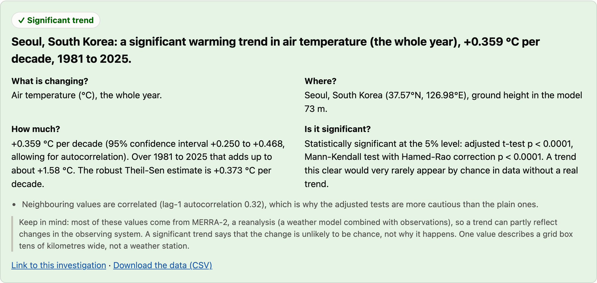
Real screenshot: the verdict for Seoul air temperature, 1981 to 2025, from live NASA POWER data.
The problem
Earth science data rise and fall all the time. Students need to pick a variable, see past the seasons and decide whether a slope is a trend. That usually takes several tools and a statistics package.
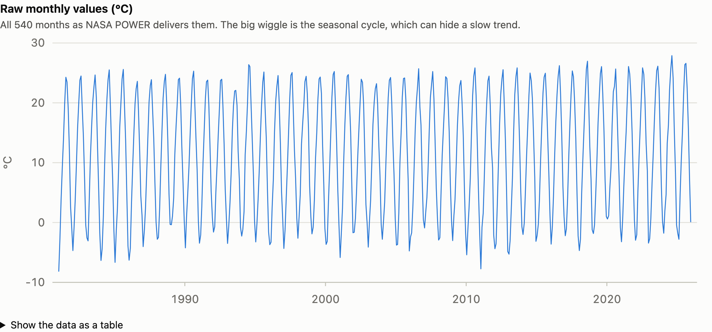
Raw monthly air temperature at Seoul: the summer-winter swing hides everything else.
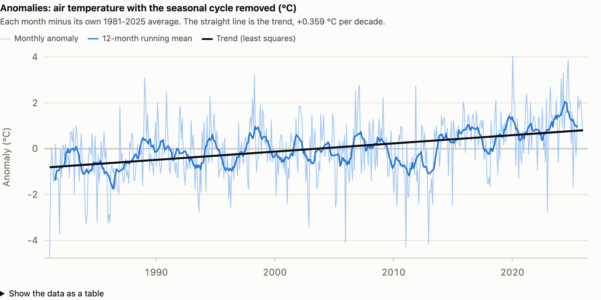
Same data with the seasonal cycle removed: a slow upward trend appears.
How it works, and how NASA data make it possible
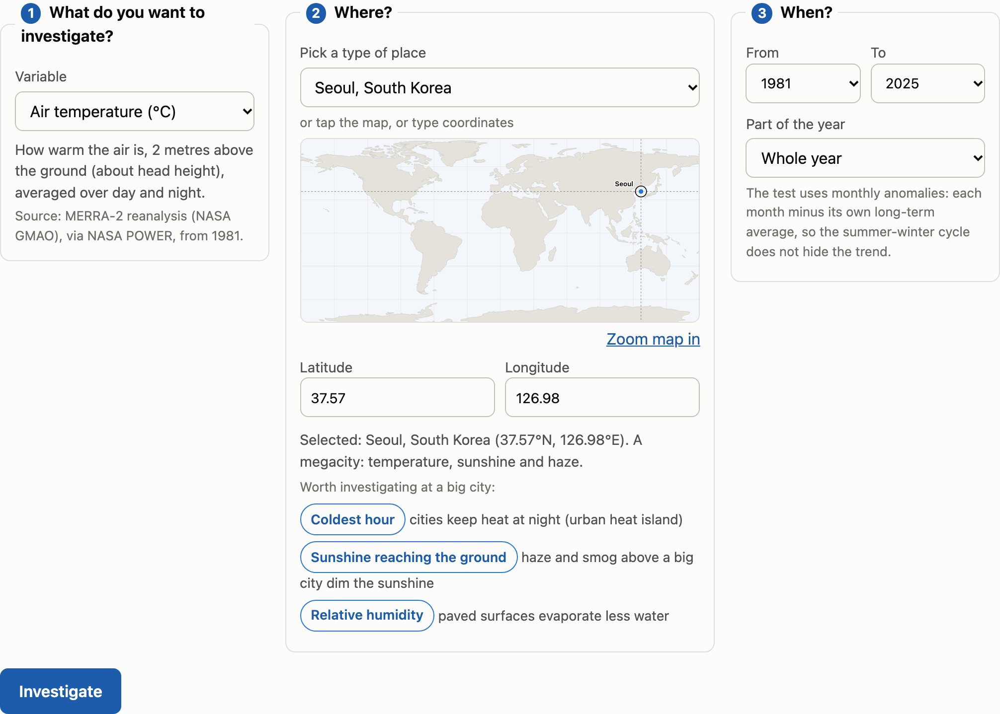
The user experience
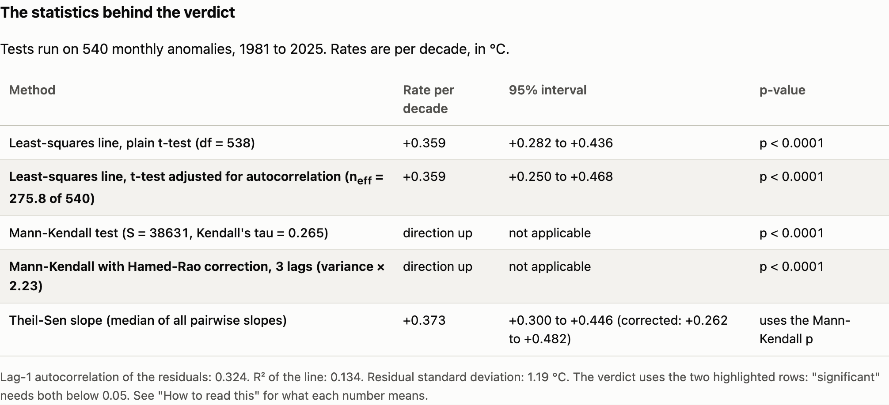
Every number behind the verdict, with the two tests the verdict uses highlighted.
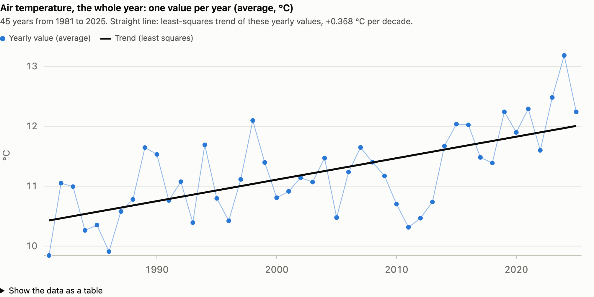
Where is it changing?
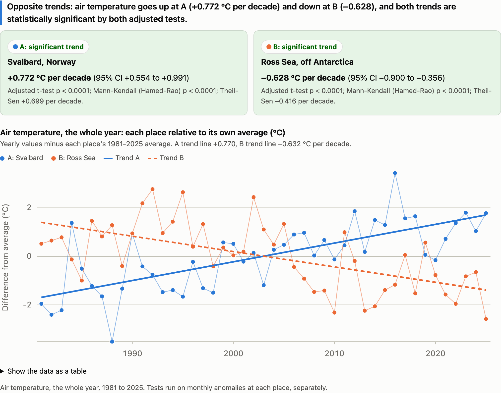
Compare two places: Svalbard (Arctic) warming, Ross Sea (off Antarctica) cooling, both significant on both tests.
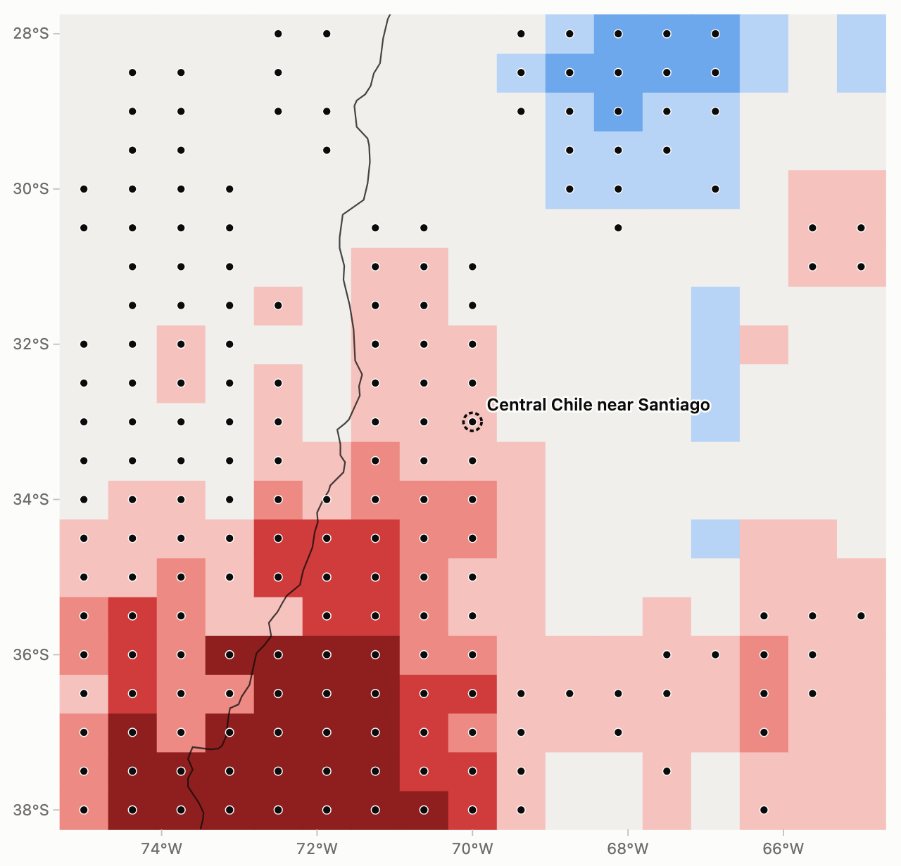
Trend map of rain for a 10 by 10 degree box around central Chile: 163 of 357 cells drying (red), 28 wetting (blue); dots mark p < 0.05.
Learn by watching, and trust the numbers
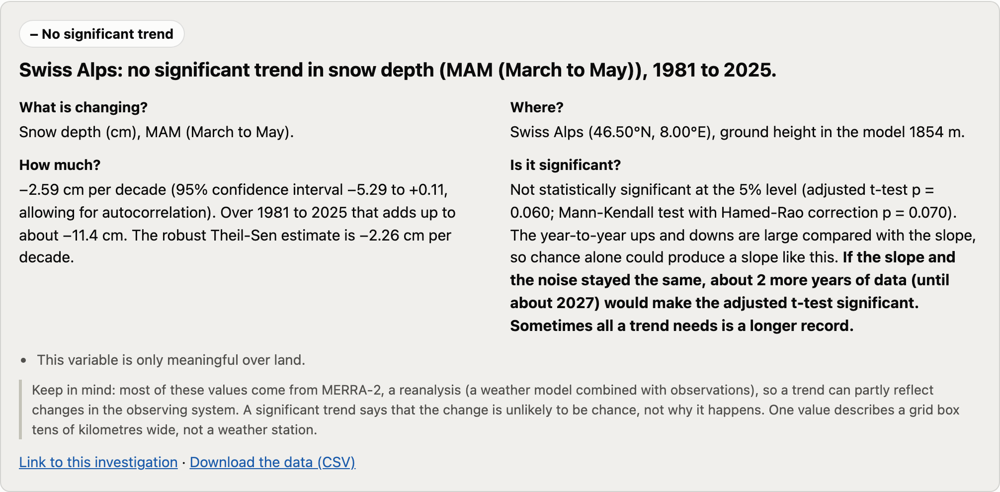
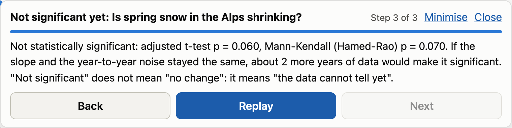
Case "Not significant yet": Alps spring snow is falling, but the data cannot tell yet; the tool estimates how many more years are needed. Below: the case player.
What it could become
Try it: seunghyeon1004.github.io/slope-and-signal
Code (MIT): github.com/seunghyeon1004/slope-and-signal
Team Slope and Signal: Seunghyeon Baek, Kim Mi Yeon
Use of AI: code and text written with Claude (Anthropic) under the team's direction; all numbers come from NASA data and the project's own tested statistics code; no AI-generated images. Data: NASA POWER (NASA LaRC), MERRA-2 (NASA GMAO), CERES SYN1deg and GEWEX SRB; land outlines: Natural Earth (public domain). Not an official NASA product.
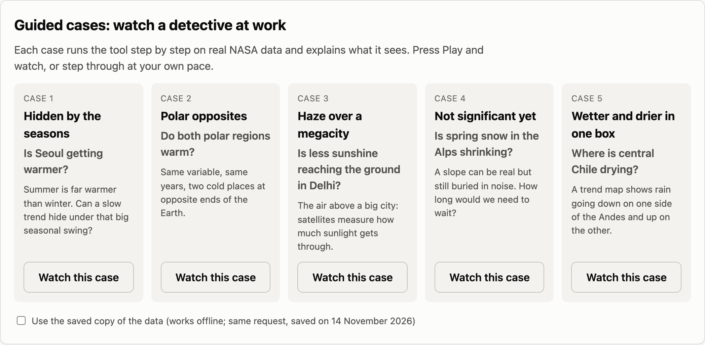
The five guided cases, ready for a classroom.